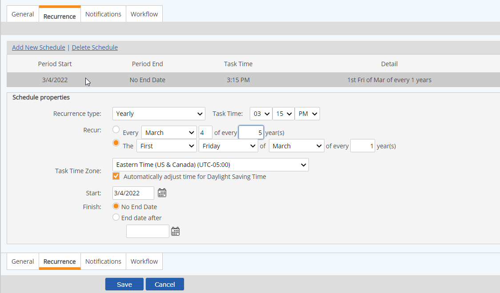

To change the schedule for recurrent tasks, you can edit the task recurrence schedule. Editing the task recurrence schedule is limited by the following constraints:
To edit a task recurrence schedule:
Select the Recurrence tab.
A summary of that task schedule(s) is displayed. If the task has more than one schedule, a summary of each schedule is displayed.
Select the schedule by clicking the row in the schedule summary list.

A warning appears informing you that changes to the recurrence pattern will force the removal of task completion information. This will only affect tasks that are partially complete, not completed tasks. Click OK to continue.
If data exists for this schedule, only the End Date is enabled for change. Select the End Date after button, then enter the date to cancel this schedule.
If no completed tasks exist for this schedule, all fields will be editable and you may edit the schedule as desired.